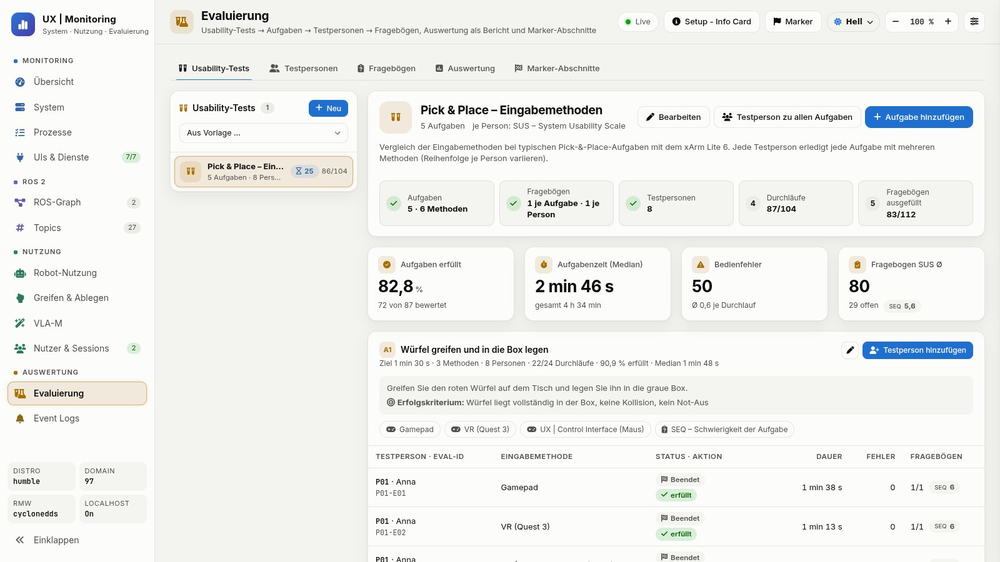
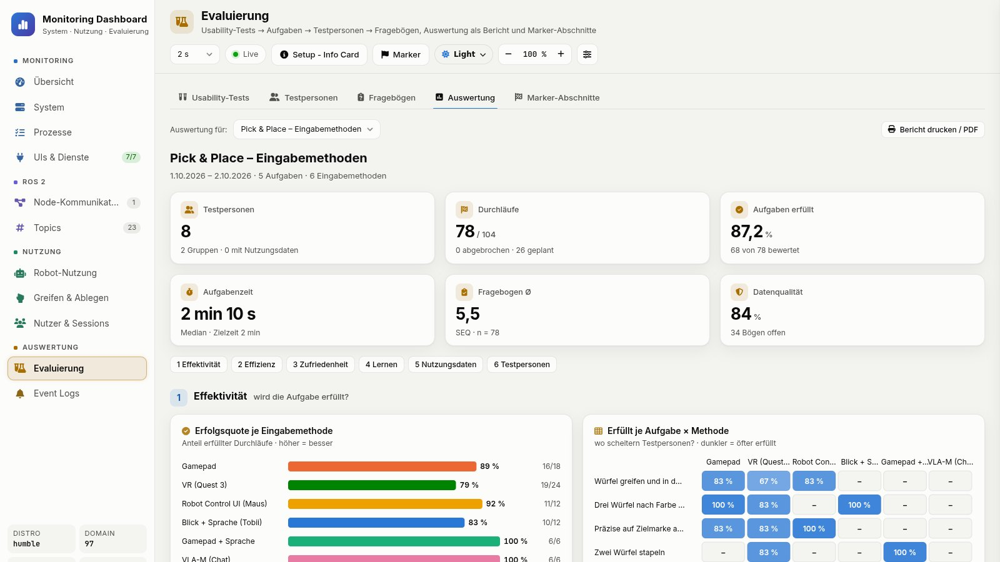

Bessere Eingabegeräte, Kameras, KI-Modelle oder Software-Module ersetzen die alten einzeln; feste ROS-2-Schnittstellen halten den Rest des Systems unverändert. Als Nächstes wird auch der Roboterarm austauschbar (geplant).
Funktionsprinzip
Wer macht was?
Die Kontrolle wandert zwischen Mensch und System. Das erste und das letzte Wort bleiben beim Menschen.
Stufe wählen, Schritt antippen
MenschSystem⇄ÜbergabeFest auf jeder Stufe
Wechsel der Stufe jederzeit, ohne Verzögerung
Weniger Mental Workload bei langen Aufgaben
Aktueller Schritt
Kollisionsprüfung immer beim SystemStopp immer beim Menschen
KI · VLA · Human-in-the-Loop
Die KI plant. Der Mensch gibt frei.
Das Sprachmodell wählt nur Skills und Objekte. Code prüft jeden Plan, bevor sich etwas bewegt.
Dem Roboter eine Aufgabe geben (Demo)
Lokales Modell qwen2.5:14b, offlineOptional: Claude · GeminiSkills: pick · place · home · gripperEin Klick: Auto-Palettieren ↓Gemessen mit 46 festen TestanweisungenREAL: jeder Plan wartet auf ExecuteDeutsch + EnglischNächster Schritt: trainiertes VLA-Modell als Skill (SmolVLA)
Planen, dann starten: Karton für Karton auf die Palette
Draufsicht · Zelle mit Zuführbändern, Rollenauslauf & Pusher
Getrennt nach Software und Hardware: sieben Software-Schichten von der Oberfläche bis zum Betriebssystem, darunter der Referenz-Aufbau. Jedes Gerät und jedes Modul lässt sich hinter seiner ROS-2-Schnittstelle tauschen.
Software · sieben Schichten
Genaue Komponenten, von den Web-Apps bis zum Betriebssystem.
Aufbau im Labor, Bedienung über jeden aktuellen Browser auf Desktop, Laptop, Tablet oder Smartphone. Tauschbar z. B. gegen eine andere Kamera oder ein anderes Gamepad.
UFactory xArm Lite 6
Roboterarm, 6 Achsen
Ethernet
Vakuumgreifer
Pick and Place, Laser-Zielhilfe
Tool-I/O
Stereolabs ZED Mini
Stereo-Tiefe, 3D-Punktwolke
USB 3
Workstation
i9-12900K · RTX A5000
Ubuntu 22.04CUDA
Xbox Elite 2
Kartesisches Joggen, Tempo
USB / BT
Meta Quest 3
6-DoF-VR-Teleoperation
WebXRoptional
Tobii Pro Glasses 3
Blicksteuerung, Greifen per Verweilzeit
RTSPoptional
Mikrofon · Touch-Display
Sprachbefehle, zusätzliches Touch Panel
USB / HDMIoptional
Forschung · Systemidee
Entwickeln, erproben, validieren
Als Integrationsschicht auf ROS 2 führt die Plattform heterogene Teilsysteme in einer Laufzeitumgebung zusammen. Entwicklung und empirische Validierung bilden einen geschlossenen Kreislauf.
Konventionelle Teleoperation von Industrierobotern setzt Feinmotorik und Expertenwissen voraus und schließt damit viele potenzielle Nutzergruppen aus. Das Projekt untersucht, wie multimodale Eingaben, assistive Autonomie und ein Digital Twin diese Barrieren senken, ohne die Kontrolle des Menschen einzuschränken.
Leitfrage
Wie lassen sich Prozesse und Arbeitsplätze so gestalten, dass sie die menschzentrierten Anforderungen der Industrie 5.0 messbar erfüllen?
Instrumente: SUS, NASA-TLX, UEQ-S, SEQ im Monitoring Dashboard
Transfer: Gestaltungsempfehlungen für die Einführung in Unternehmen
Systemidee · vier Teilsysteme
Sensorik · PerzeptionDie Umgebung erfassen.
ZED Mini mit YOLO-Objekterkennung in 3D, alternativ Tischkamera mit ArUco-Markern; taktile und physiologische Sensoren (geplant).
Multimodale SteuerungZehn Steuerwege. Ein System.
Blick (Tobii), Sprache (OpenAI Whisper), Gamepad, VR und Touch nebeneinander; der Control-Lock gibt die Steuerung immer nur einem Client.
Kognitive Robotik · VLAVon der Sprache zur Handlung.
Ein LLM-Agent (lokal über Ollama, Claude oder Gemini) übersetzt sprachliche und visuelle Befehle in Handlungssequenzen: Greifen, Platzieren, Palettieren.
DatenakquisitionTechnik und Mensch synchron.
Zeitsynchrone Aufzeichnung von Leistungsdaten (rosbag2-Blackbox) und Interaktionsdaten (UI-Klicks, Fragebögen).
Entwickelnim Digital Twin (WebGL, optional Isaac Sim) im FAKE-Modus
Erprobenreproduzierbar am xArm Lite 6 (REAL), lokal oder remote
Validierenempirisch mit Monitoring Dashboard, Blackbox und Fragebögen
Geschlossener Kreislauf: Erkenntnisse aus der Validierung fließen zurück in die Entwicklung.
Evaluierungsplattform
Gemessen statt geschätzt
Das Monitoring Dashboard plant Usability-Tests, zeichnet jeden Durchlauf auf und wertet ihn aus.


Usability-Tests
Monitoring Dashboard · Port 8083
Ein Test führt Schritt für Schritt von den Aufgaben bis zum Fragebogen. Jeder Durchlauf wird automatisch gemessen.
Test→Aufgaben→Testpersonen→Durchläufe→Fragebögen
Je Durchlauf: Motions, Griffe, UI-Klicks, Gamepad-Tasten, Jog-Zeit, Warnungen
Fragebögen am Tablet, Scores automatisch berechnet
Vergleich nach Eingabemethode, Aufgabe, Gruppe und Sitzung
SUSNASA-TLXUEQ-SSEQExport CSV · JSON
Testperson wählen
Zeile = Reihenfolge einer Testperson · Methode antippen